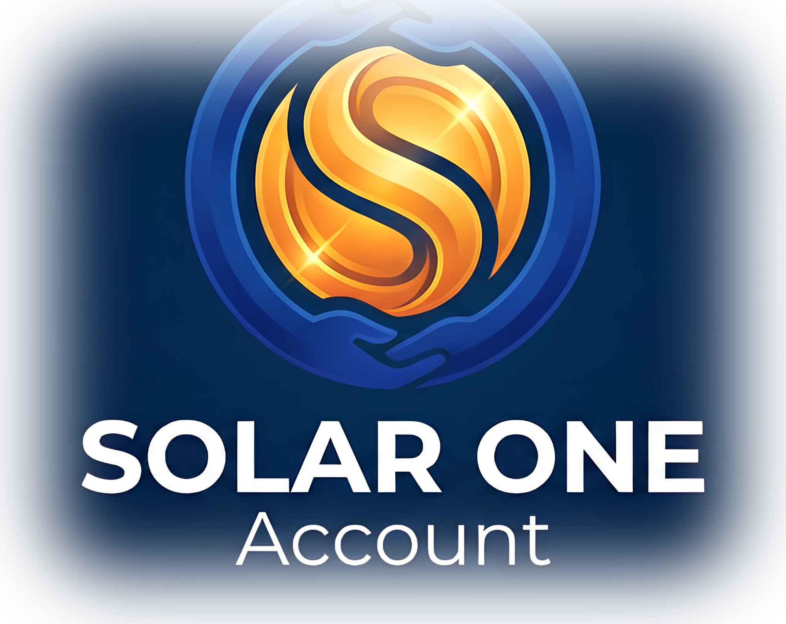

Catálogo de Vetores Comerciais
SOA/SOS · Sustainability Operating System · Soluções em Energia
V1 a V8 · Matriz Cliente × Vetor v3.1 · Frente A (LRCAP/BESS) · referência operacional
● Referência operacional · uso interno
A SOA/SOS opera oito vetores comerciais distintos, cada um com cliente, ticket e gatilho regulatório próprios — e uma regra dura: identifique o tipo de cliente antes de propor o vetor.
Matriz Cliente × Vetor v3.1 (validada por Danilo Dupin · ex-ONS) classifica clientes em A·Geração, B·Transmissão, C·Consumidor, D·Banca, E·Institucional e F·Seguros (novo, criado pelo V8). Este catálogo é a fonte única de verdade para cada vetor — o que é, para quem é, quanto custa, qual o gatilho.
Fonte canônica dos vetores. Esqueleto extraído dos dossiês V1–V8 (`_VETORES_DOSSIES/DOSSIE_V{1..8}.md`, 05–08/06/2026), consolidados em `Memos_Vetores_SOA_SOS_V1_a_V8_v1.md` (v1.0 · 05/06). Agrupamento Frente A confirmado em `Resposta_Marcelo_evolucao_BESS_2026-06-11.md`. Conflito de numeração documentado a partir de `Arquitetura_Maquina_SOA_SOS_v1.0_Para_CTO.md` (pós-revisão 13–14/06).
8vetores comerciais (V1–V8)
6tipos de cliente (A–F)
1frente formal ativa (Frente A)
2sistemas de numeração em conflito
Os oito vetores
Cada vetor é uma linha de serviço autônoma — cliente, ticket e gatilho próprios. Cor da insígnia: ■ navy = produto em operação · ■ laranja = gatilho regulatório disparado · ■ teal = em estudo.
V1
Transmission Intelligence Suite
B · Transmissão + D · Banca M&A + fundos infra
Inteligência técnica de transmissão para originação, due diligence e M&A. Produto-âncora: Transmission M&A Risk Memo. Complementos: Leilão Screening (TOS dual), Reforço Pipeline Tracker, RAP Reconciliation Memo. Insumo: SIGET (47k módulos), `linha_transmissao`, `subestacao`, Master Barramentos v1.5.1 (714 barramentos).
Ticket: R$ 50–400k/engajamento
Gatilho: Leilão ANEEL 30/10/2026
Ativo · produto-âncora
V2
Geração Access Advisory
A · Geração (UFV/eólica/GD + bancos PF)
Mapa de risco técnico de conexão por barramento (Access Risk Map, score 0–100, classes Crítico/Alto/Atenção/Baixo). Screening pré-investimento antes da aquisição de terreno. Trava: não é parecer de acesso formal — é apoio à decisão de investimento.
Ticket: R$ 25–80k/projeto
Gatilho: PNAST 1ª Temporada
Ativo · porta de entrada Tier 1
V3
Flex Asset Valuation
A · Geração + investidores/fabricantes BESS
Valoração de flexibilidade, BESS e resposta de demanda. Flex Map por barramento, business case de arbitragem de PLD com spread realizado, dimensionamento de BESS contra curtailment local. Insumo: `constrainedoff_*`, `preco_ccee_horario`, `fator_capacidade`, NASA POWER.
Ticket: R$ 40–120k/estudo
Gatilho: Marco do Armazenamento (02/06/2026)
🔴 Gatilho ativo · 1º LRCAP destravado
V4
Curtailment Evidence Pack
A · Geração com curtailment + D · Banca + auditores ESG
Pacote probatório auditável (schema JSON: hec_id, issuer, asset, measurement, lineage, claims, assurance) no padrão ISAE 3000 / ISO 14064. sHEC como prova de frustração renovável. Suporte técnico a contencioso de ressarcimento. Insumo: `constrainedoff_eolica_detalhe_usina` e `constrainedoff_fotovoltaica_detalhe_usina` (granularidade por usina/instante).
Ticket: R$ 60–180k/trimestre (recorrente)
Gatilho: CP ANEEL 09/2025 · Lei 15.269/2025
Ativo · material ABIAPE entregue
V5
Carga Especial Compliance
C · Consumidor (data centers, H2V, hyperscalers)
Conformidade de grande carga + matching Scope 2 horário via Família HEC. Hub acoplado: Lado A geração+QSV → HEC · Lado B consumo → queima → sHEC + relatório auditável de 24/7 CFE. Casa dos Ventos / ByteDance Pecém em prospecção (rádio silêncio).
Ticket: Setup R$ 200–600k + R$ 30–80k/mês
Gatilho: CVM 193 · CBAM · GHG Scope 2 · acreditação EnergyTag
Pré-lançamento HEC · maior ticket da carteira
V6
Regulatory Submission Support
E · Institucional (ABSOLAR, ABEEólica, ABRATE etc.)
Subsídio técnico a contribuições em CP (ANEEL/MME) com dado rastreável. Notas técnicas, análise de impacto regulatório, Compliance Audit Sweep (V6.b), subscription de inteligência regulatória contínua. Trava: subsídio técnico rastreável, não lobby.
Ticket: R$ 30–100k/projeto ou 200–500k/ano
Gatilho: CPs ANEEL 46/2025, 39/2023 2ª fase, 09/2025, 45/2019
Ativo · ABSOLAR carta v2 enviada
V7
Sandbox & Ancillary Services Layer
A · Geração + C · Consumidor (Sandbox / LRCap)
Camada de medição e evidência para serviços ancilares e sandbox regulatório. Evidência de prestação (QSV + telemetria), suporte técnico a projetos de sandbox, relatório recorrente de desempenho. Trava: provê medição e evidência, não opera o serviço ancilar.
Ticket: R$ 25–60k/mês (recorrente)
Gatilho: Sandbox Controle de Tensão · LRCap 2026
Planejado · ticket recorrente acessível
V8
Insurance Risk Evidence & Index Layer
F · Seguros (NOVO) — seguradoras, resseguradoras, corretoras, segurados
Três módulos: (A) Claims — Evidence Pack ex-post imutável para liquidação de sinistro; (B) Subscrição — priors de risco auditáveis (score de curtailment por barramento, P50/P90 validado); (C) Paramétrico — índice QSV neutro como calculation-agent, reduzindo basis risk. Tese Clemens, porta natural via Aon. Estrutura faseada (linha interna → piloto → NewCo).
Ticket: a definir (fee calculation-agent · subscription · fee por pack)
Bloqueio nº 1: validar non-compete Clemens × Aon
Em estudo · cria Tipo F · exige Matriz v3.2
Frente A · Advisory LRCAP/BESS = V3 + V7
Único agrupamento formal nomeado no projeto. Calibrado ao gatilho regulatório de armazenamento.
A
Frente A · Advisory LRCAP/BESS
Vetores V3 (Flex Asset Valuation) + V7 (Sandbox & Ancillary) · montada e calibrada em 10/06/2026
Universo de prospecção: 129 barramentos β=0,9 do LRCAP (Portaria MME 136/2026, leilões 02 e 04/12/2026, cadastro EPE 15/06–31/07) sobre nossa base de 714 barramentos canônicos. Posicionamento: "screening agora é grátis no mercado; a decisão bancável não é."
Oferta 1 · BESS Locational Brief
Pré-cadastro · R$ 40–80k · 2–3 semanas
Screening de barramentos candidatos.
Oferta 2 · Flex Asset Valuation
Pré-leilão · R$ 60–120k
TIR por nó, stack LRCAP + arbitragem + ressarcimento, estratégia de lance.
Metas até 31/07: 4 propostas formais enviadas (janela cadastro EPE). Ferramentas: planilha mestre Flex_Map (v1.5.1/v3), régua F0–F5 SQL versionado, dossiê bigBESS interno como benchmark.
Frentes B e C. Não nomeadas formalmente no projeto até 28/06/2026. Apenas a Frente A aparece com rótulo explícito em material comercial vivo (Resposta_Marcelo, 11/06).
Matriz Cliente × Vetor v3.1
Regra dura: identificar o tipo de cliente antes de propor qualquer vetor. V8 cria o Tipo F (Seguros), exigindo subida para v3.2.
| Tipo de cliente |
V1 | V2 | V3 | V4 |
V5 | V6 | V7 | V8 |
| A · Geração | — | ● | ● | ● | — | — | ● | — |
| B · Transmissão | ● | — | — | — | — | — | — | — |
| C · Consumidor | — | — | — | — | ● | — | ● | — |
| D · Banca jurídica | ● | — | — | ● | — | — | — | — |
| E · Institucional | — | — | — | — | — | ● | — | — |
| F · Seguros (NOVO) | — | — | — | — | — | — | — | ● |
⚠ Conflito de numeração — Sistema A vs Sistema B
Existem dois sistemas de numeração coexistindo. Antes de usar V[X] em qualquer material, confirmar qual sistema é referência.
⚠ Renumeração proposta pelo CTO (pós-revisão 13–14/06)
O documento `Arquitetura_Maquina_SOA_SOS_v1.0_Para_CTO.md` renumera os vetores e introduz dois novos (V2 Térmica Stranded + V9 Assurance as Code). Os códigos coincidem mas os escopos divergem. Sistema A segue sendo o canônico comercial até decisão de conciliação.
| Código | Sistema A · Estratégia v3.1 (canônico comercial) | Sistema B · Arquitetura para CTO (pós-apocalipse) |
|---|
| V1 | Transmission Intelligence Suite | Curtailment Map (era V4) |
| V2 | Geração Access Advisory | Térmica Stranded (NOVO) |
| V3 | Flex Asset Valuation | Transmission M&A Risk (era V1) |
| V4 | Curtailment Evidence Pack | Curtailment Evidence (mantido) |
| V5 | Carga Especial Compliance | Flex Map (era V3) |
| V6 | Regulatory Submission Support | sHEC |
| V7 | Sandbox & Ancillary Services Layer | BESS Site Selection |
| V8 | Insurance Risk Evidence & Index Layer | Insurance Risk Layer (mantido) |
| V9 | — | Assurance as Code (NOVO · sugerido por Grok #2) |
Sequência de adoção do Sistema B (endossada pelo CTO): V4 → V1 → V7/V3 → V5/V9. Fases: (1) V4+V1, (2) V3+V7, (3) V6+V8+V9.
Linha do tempo das nomenclaturas
Abril 2026
Relatório Estratégico de Mercado v1.0 · termo "Vertentes" V1–V6 (B2B HEC, Premmia/Vibra, Carbon Zero Journey, FII B3, mHEC pessoal, GEC/Biogas). Terminologia anterior. Não confundir com os Vetores V1–V8 atuais.
05/06/2026
Dossiês V1–V8 gerados (`_VETORES_DOSSIES/`) + scripts `Criar_Vetores_SOA.ps1` e `Aprofundar_Vetores_SOA.ps1`. V8 nasce como "vetor novo, em estudo" criando o Tipo F.
08/06/2026
V3 atualizado (v1.1) · gatilho do marco do armazenamento ANEEL (02/06) acoplado. Frente A começa a ser montada.
11/06/2026
Frente A formalizada em material vivo (Resposta_Marcelo) · universo 129 barramentos β=0,9 LRCAP · duas ofertas datadas (BESS Locational Brief + Flex Asset Valuation).
13–14/06/2026
Revisão arquitetural pós-"apocalipse" · Manus #2 + Grok #2 propõem renumeração e Sistema B com V2 Térmica Stranded + V9 Assurance as Code. CTO endossa sequência V4 → V1 → V7/V3 → V5/V9.
28/06/2026
Estado atual · Sistema A segue como referência comercial (memos, dossiês, Matriz v3.1). Sistema B convive como visão arquitetural. Conciliação pendente.
Onde encontrar (documento-fonte)
| Documento | Conteúdo | Status |
|---|
| `_VETORES_DOSSIES/DOSSIE_V{1..8}.md` | Dossiê canônico de cada vetor (resumo, dor, entregáveis, insumo, alvos, pricing, mapa regulatório, trava, primeiro passo). | ✓ canônico |
| `Memos_Vetores_SOA_SOS_V1_a_V8_v1.md` | Consolidação dos 8 vetores · referência de não-confusão. Confirma Matriz v3.1 e a regra dura. | ✓ canônico |
| `Resposta_Marcelo_evolucao_BESS_2026-06-11.md` | Mapeamento operacional da Frente A · ofertas datadas · universo LRCAP · metas até 31/07. | ✓ uso vivo |
| `Arquitetura_Maquina_SOA_SOS_v1.0_Para_CTO.md` | Sistema B renumerado · Camadas 0–5 · sequência de adoção pós-apocalipse. | ⚠ em conflito |
| `Projeto_BMC_SOA-SOS/BMC_Vetores_v1.md` | Business Model Canvas por frente (7 canvases) · mapeamento BMC × V1–V7. V8 marcado como "PROPOSTO". | ○ vista produto |
| `Taxonomia_Materiais_SOA_SOS_v2.md` | Taxonomia de materiais por vetor servido + camada (AR/FM/TVM). | ○ apoio |
| `SOA_SOS_Relatorio_Estrategico_Mercado_v1_0.md` | Terminologia "Vertentes" V1–V6 (abril/2026) · anterior aos Vetores atuais. | — histórico |
Disciplina factual aplicada a este catálogo. SOA tem ~4 meses de operação, receita zero, três pedidos de patente depositados no INPI (não "patenteada"). A camada analítica (`energia_publica`, 143M+ linhas) é real e auditável via SQL. A plataforma HEC (certificados/blockchain) está pré-lançamento — TRL 8 contrato, TRL 7 QSV, 0 transações em mainnet. Onde um vetor depende da plataforma HEC (V5), isso está sinalizado.
Discutir um vetor específico?
Uma conversa para validar fit, ticket, gatilho regulatório e primeiro passo do vetor que faz sentido para o cliente.